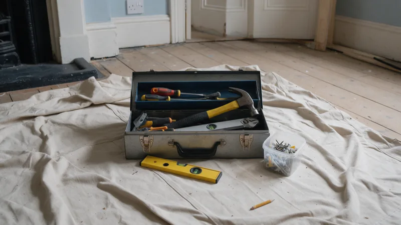

Every handyman has a line, and the useful thing is to know where it is before you book rather than at the door. Here is ours, and the reason behind each one. None of these is us being precious.
New electrical circuits, sockets and lighting
Adding a socket, moving a light, altering a circuit or anything to do with the consumer unit is an electrician's work. Beyond the obvious risk, parts of it are notifiable, which means it has to be done by somebody who can sign for it or inspected by somebody who can.
Changing a like for like light fitting is a grey area that plenty of householders do themselves. We leave it alone, because the thing we would have to check first is the state of the circuit, and that is exactly what an electrician is for.
Anything on the heating system
Radiators, valves, the controls, the cylinder and the pipework that joins them. Some of that is legally restricted work and the rest of it sits on a sealed, pressurised system where a mistake empties itself into a ceiling. It is a heating engineer, every time.
Pipework buried in a wall or a floor
Changing a tap washer or a toilet seat is one thing. Cutting into pipework that is chased into plaster is another, because you cannot see where it runs, you cannot easily isolate it, and the cost of getting it wrong is a wall out and a floor up.
Roofs and anything off a tall ladder
Gutters at ground floor level from a short ladder are reasonable. Anything above that needs the right access equipment and somebody who works at height every day. Falls from ladders are the thing that actually injures people in this trade, not the tools.
Gutters and roofline when the problem is higher up
A gutter that overflows in one corner is often a blockage you can reach. A gutter that has come away from the fascia is telling you about the fascia, and that is roofline work with proper access.
Structure
Anything holding the house up: joists, lintels, a wall somebody wants taking out, or a crack that has appeared and is getting longer. That is a builder, and sometimes a structural engineer before the builder. A crack that is moving wants measuring over weeks, not filling.
Damp that keeps coming back
A patch that returns every winter is not a decorating problem and filler will not fix it. Something is letting water in or stopping it drying out, and finding out which is a specialist's job.
Being locked out
A locksmith, with the tools and the technique to get you in without wrecking the door. We will happily come afterwards and sort out whatever caused it.
What we will always do
Tell you which trade you want, what to describe when you ring them, and what a reasonable answer sounds like. Working out who to call is free and it takes a minute on the phone.
Drawn, not photographed
The line, drawn plainly
Nothing on the right is beyond a competent person's ability on a good day. What they have in common is that getting it wrong is expensive, dangerous or both.
On the list
Passed on
Questions
On this one
Will you still do the rest of my list?
Yes. One job for a specialist does not cancel the visit, it just comes off the list with a note.
Can you recommend somebody?
On a real version of this site a firm would have its own people. This is a demo, so there is nobody to name.
What if I am not sure which it is?
Describe it on the phone. That is usually enough to place it.
More advice
The other two

Generated photoMaking a job list for a handyman visit
Three columns and nothing clever: the room, the thing, and what is wrong with it. A list written that way gets more ticked off in a visit than a list of good intentions does.
 Generated photo
Generated photoSmall jobs landlords should sort between tenants
The week the keys are back is the only week the whole place is empty and nothing is urgent. Here is the list that is worth doing in it, and the order to do it in.
Got a list?
Send it over with the room, the thing and what is wrong with it.